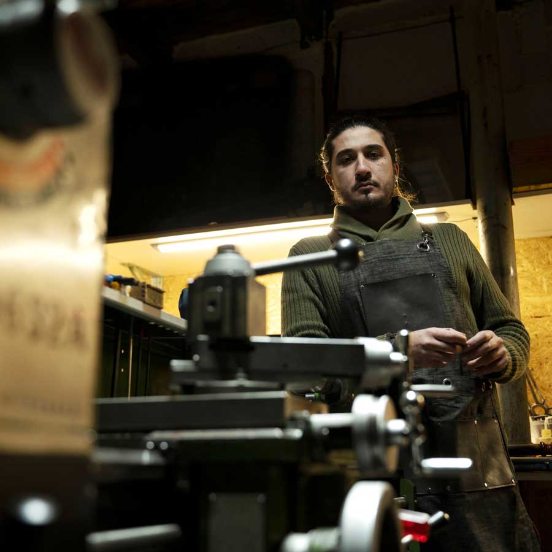

Welcome! I’m Rennan Villar, and I’m excited to share my
handcrafted creations with you. For over 15 years, I’ve been
devoted to crafting unique jewelry, custom knives, pipes, and
leather accessories.
My journey began in Brazil, where I first delved into the art of
craftsmanship. Since then, I’ve had the chance to work on
international projects, collaborating with other artists and
continuously refining my skills. Currently, I live and work in
Latvia.
Each piece you find here is crafted with care and dedication.
Whether it’s a piece of jewelry, a well-made knife, a distinctive
pipe, or a finely crafted leather accessory, I stand behind my
work with a lifelong warranty. My goal is to ensure that every
item is not just a product, but a lasting piece of art.
In addition to the collection, I offer custom orders that can be
personalized in a variety of ways. If you have a specific vision
or need something unique, don’t hesitate to reach out.
Feel free to explore my collection and portfolio. To learn
more about my story and journey, visit my full bio at
homofaber.com.
